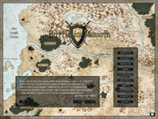
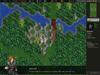
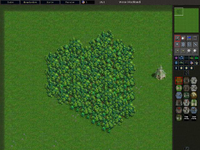

Battle For Wesnoth
Dieser Artikel wurde für die folgenden Ubuntu-Versionen getestet:
Ubuntu 14.04 Trusty Tahr
Zum Verständnis dieses Artikels sind folgende Seiten hilfreich:
Battle for Wesnoth  ist ein rundenbasierendes Fantasy-Strategiespiel. Verschiedene Fraktionen kämpfen gegeneinander, wobei jede Fraktion eigene Einheiten hat, welche jeweils bestimmte Vor- und Nachteile haben, zum Beispiel genießen einige Einheiten einen besonderen Verteidigungsbonus in Wäldern, Bergen, Dörfern oder Burgen, sind besonders verwundbar gegen bestimmte Arten von Attacken oder können magische Angriffe ausüben.
ist ein rundenbasierendes Fantasy-Strategiespiel. Verschiedene Fraktionen kämpfen gegeneinander, wobei jede Fraktion eigene Einheiten hat, welche jeweils bestimmte Vor- und Nachteile haben, zum Beispiel genießen einige Einheiten einen besonderen Verteidigungsbonus in Wäldern, Bergen, Dörfern oder Burgen, sind besonders verwundbar gegen bestimmte Arten von Attacken oder können magische Angriffe ausüben.
|  |  |  |
| Spielmenü | Spielszene | Karteneditor |
Installation¶
Die Installation aus den Ubuntu Paketquellen kann einfach über die "Wesnoth Suite" oder individuell angepasst erfolgen.
Die verfügbaren Versionen von Wesnoth lassen sich der folgenden Tabelle entnehmen. Die Spielstände der Versionen 1.8, 1.10 und 1.12 sind nicht kompatibel und können nicht konvertiert werden. Die einzelnen Kampagnen wurden weiterentwickelt und in vielen Details liebevoll verbessert. Daher lohnt es sich allemal Kampagnen neu anzufangen.
| Versionsübersicht | |||||
| Ubuntu-Version | Wesnoth 1.8 | Wesnoth 1.10 | Wesnoth 1.11 | Wesnoth 1.12 | Wesnoth 1.13 |
| Ubuntu 14.04 Trusty Tahr | Nein | Ja | ppa | Ja | ppa |
Hinweis:
Das c42-backport-games PPA stellt Backports von Spielen zur Verfügung. Von Wesnoth 1.11 sind hier Backports aus Debian zu finden. Für weitere Informationen siehe c42-wiki.
apt-add-repository ppa:dirk-computer42/c42-backport-games
Hinweis!
Zusätzliche Fremdquellen können das System gefährden.
Wesnoth Suite¶
Das vollständige Spiel, inklusive aller offiziellen Kampagnen und der Musik, kann über folgendes Paket installiert werden: [1]
wesnoth (universe)
 mit apturl
mit apturl
Paketliste zum Kopieren:
sudo apt-get install wesnoth
sudo aptitude install wesnoth
Möchte man in Ubuntu 14.04 Wesnoth 1.12 installieren, so müssen Backports aktiviert sein (ist standardmäßig der Fall) und man muss die Angepasste Installation verwenden, weil sonst das Metapaket die Version 1.10 installiert.
Zusätzlich können noch der Netzwerk-Server und Werkzeuge für Kampagnen-Entwickler installiert werden.
Angepasste Installation¶
Will man die Bestandteile der Installation selbst festlegen, installiert man nicht das oben angegebene Metapaket, sondern nur eine Auswahl der folgenden Pakete. Die Befehle im Folgenden beziehen sich auf Version 1.10. Wird eine neuere Version verwendet, sind die Befehle entsprechend anzupassen.
Minimum¶
Um Battle for Wesnoth spielen zu können, benötigt man mindestens das Paket: [1]
wesnoth-1.10-core (universe)
mit apturl
Paketliste zum Kopieren:
sudo apt-get install wesnoth-1.10-core
sudo aptitude install wesnoth-1.10-core
Der Karteneditor ist Teil des Hauptprogramms und falls durch vorhergehende Distributions-Upgrades noch das Paket wesnoth-editor auf dem System vorhanden ist, kann es sicher entfernt werden.
Optionale Pakete¶
Optional ist die Installation folgender Pakete:
wesnoth-1.10-music (universe, Hintergrundmusik (ca. 140MB))
wesnoth-1.10-server (universe, Multiplayer Netzwerk-Server)
wesnoth-1.10-tools (universe, Werkzeuge für Kampagnen-Entwickler)
mit apturl
Paketliste zum Kopieren:
sudo apt-get install wesnoth-1.10-music wesnoth-1.10-server wesnoth-1.10-tools
sudo aptitude install wesnoth-1.10-music wesnoth-1.10-server wesnoth-1.10-tools
Netzwerkspiel eröffnen¶
Über "Mehrspieler -> Lokales Spiel" können mehrere Spieler an einem Computer spielen (Hot seat-Modus). Man kann jedoch auch in einem LAN oder über das Internet mit anderen spielen.
Um ein Netzwerkspiel zu eröffnen, muss das folgende Paket installiert sein:
wesnoth-1.10-server (universe, Multiplayer Netzwerk-Server)
mit apturl
Paketliste zum Kopieren:
sudo apt-get install wesnoth-1.10-server
sudo aptitude install wesnoth-1.10-server
Unter Mehrspieler wählt man den Menüpunkt "Netzwerkpartie eröffnen". Beim ersten Mal muss noch der Pfad zum Server angegeben werden. Der heißt i.d.R. /usr/games/wesnothd-1.10. Jetzt kann sich jeder Spieler mit diesem Netzwerkspiel verbinden, muss dafür aber die IP-Adresse des Spielers angeben, der eröffnet hat und den Port (normalerweise 15000). Das sieht dann beispielsweise so aus: 192.168.178.23:15000
Die IP-Adresse findet man z.B. im Terminal mit dem Befehl ifconfig heraus (siehe auch IP-Adresse wechseln).
Kampagnen¶
Die offizielen Kampagnen können einzeln installiert werden, eine Übersicht findet man hier:
| Offizielle Wesnoth Kampangen | ||
| Paket | Orginal-Titel | Deutscher Titel |
Paketliste zum Kopieren: sudo apt-get install wesnoth-1.10-aoi
sudo aptitude install wesnoth-1.10-aoi
| An Orcish Incursion | "Ein Einmarsch der Orks" |
Paketliste zum Kopieren: sudo apt-get install wesnoth-1.10-did
sudo aptitude install wesnoth-1.10-did
| Descent Into Darkness | "Die dunklen Künste" |
Paketliste zum Kopieren: sudo apt-get install wesnoth-1.10-dm
sudo aptitude install wesnoth-1.10-dm
| Delfador's Memoirs | "Delfadors Erinnerungen" (erst ab Wesnoth 1.8 verfügbar) |
Paketliste zum Kopieren: sudo apt-get install wesnoth-1.10-dw
sudo aptitude install wesnoth-1.10-dw
| Dead Water | "Stille Wasser" (erst ab Wesnoth 1.10 verfügbar) |
Paketliste zum Kopieren: sudo apt-get install wesnoth-1.10-ei
sudo aptitude install wesnoth-1.10-ei
| The Eastern Invasion | "Invasion der Finsternis" |
Paketliste zum Kopieren: sudo apt-get install wesnoth-1.10-httt
sudo aptitude install wesnoth-1.10-httt
| Heir to the Throne | "Der Thronerbe" |
Paketliste zum Kopieren: sudo apt-get install wesnoth-1.10-l
sudo aptitude install wesnoth-1.10-l
| Liberty | "Freiheit" |
Paketliste zum Kopieren: sudo apt-get install wesnoth-1.10-low
sudo aptitude install wesnoth-1.10-low
| Legend of Wesmere | "Die Legende von Wesmere" |
Paketliste zum Kopieren: sudo apt-get install wesnoth-1.10-nr
sudo aptitude install wesnoth-1.10-nr
| Northern Rebirth | "Wiedergeburt des Nordens" |
Paketliste zum Kopieren: sudo apt-get install wesnoth-1.10-sof
sudo aptitude install wesnoth-1.10-sof
| The Sceptre of Fire | "Das Zepter des Feuers" |
Paketliste zum Kopieren: sudo apt-get install wesnoth-1.10-sotbe
sudo aptitude install wesnoth-1.10-sotbe
| Son of the Black-Eye | "Scharzauges Sohn" |
Paketliste zum Kopieren: sudo apt-get install wesnoth-1.10-thot
sudo aptitude install wesnoth-1.10-thot
| The Hammer of Thursagan | "Der Hammer von Thursagen" |
Paketliste zum Kopieren: sudo apt-get install wesnoth-1.10-trow
sudo aptitude install wesnoth-1.10-trow
| The Rise of Wesnoth | "Der Aufstieg Wesnoths" |
Paketliste zum Kopieren: sudo apt-get install wesnoth-1.10-tsg
sudo aptitude install wesnoth-1.10-tsg
| The South Guard | "Die Südwacht" |
Paketliste zum Kopieren: sudo apt-get install wesnoth-1.10-ttb
sudo aptitude install wesnoth-1.10-ttb
| A Tale of Two Brothers | "Die Geschichte zweier Brüder" |
Paketliste zum Kopieren: sudo apt-get install wesnoth-1.10-utbs
sudo aptitude install wesnoth-1.10-utbs
| Under the Burning Suns | "Unter brennenden Sonnen" |
Einstieg¶
Nach der Installation kann das Spiel über "Anwendungen -> Spiele -> Battle for Wesnoth" gestartet werden. Es öffnet sich das Spielmenü. Unter den "Einstellungen" kann man unter anderem im Bereich "Grafik" den Vollbildmodus aktivieren. Über die im Spiel integrierte Hilfe und das Handbuch (sieh Links) findet man weitere Hilfe. In der "Einführung" werden spielerisch die Grundzüge des Spiels erklärt. Einsteigern wird die Kampagne "Der Thronfolger" empfohlen, um in die Welt von Wesnoth einzutauchen.

Infobox¶
| Battle For Wesnoth | |
| Genre: | Rundenbasiertes Strategiespiel |
| Sprache: | unter anderem Deutsch  |
| Veröffentlichung: | seit 2003 |
| Publisher: | Battle For Wesnoth Gna! project |
| Systemvoraussetzungen: | 1 GHz Prozessor, 512 MB Arbeitsspeicher |
| Medien: | Paketquellen / Download |
| Läuft mit: | nativ |
- Erstellt mit Inyoka
-
 2004 – 2017 ubuntuusers.de • Einige Rechte vorbehalten
2004 – 2017 ubuntuusers.de • Einige Rechte vorbehalten
Lizenz • Kontakt • Datenschutz • Impressum • Serverstatus -
Serverhousing gespendet von